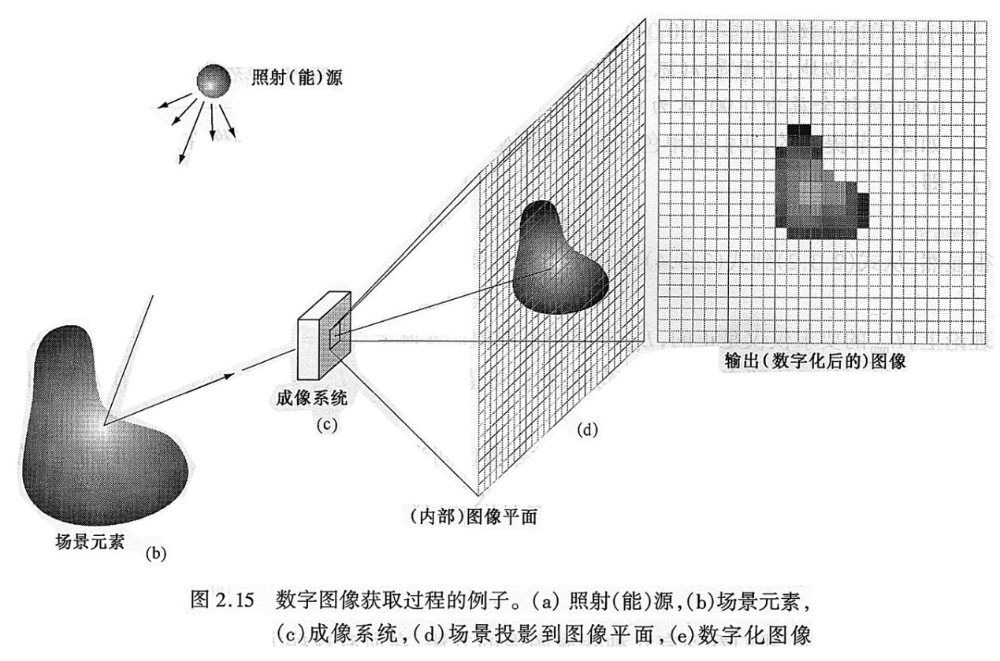
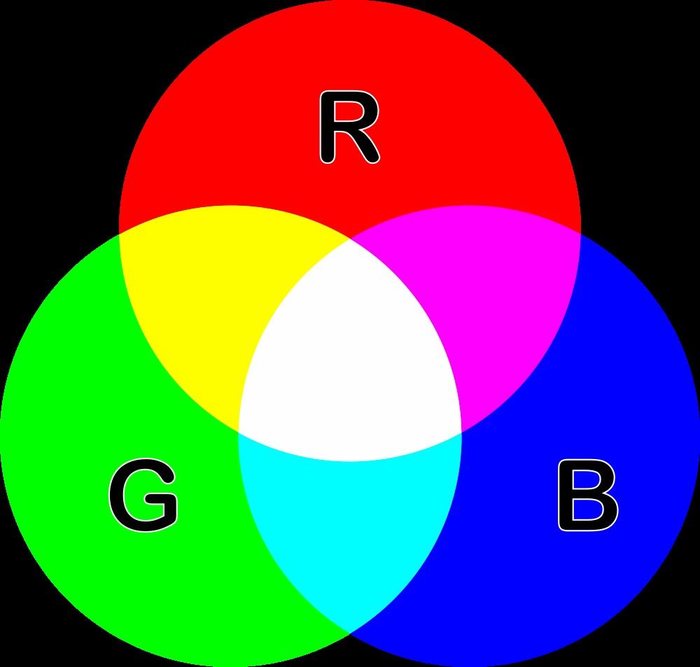
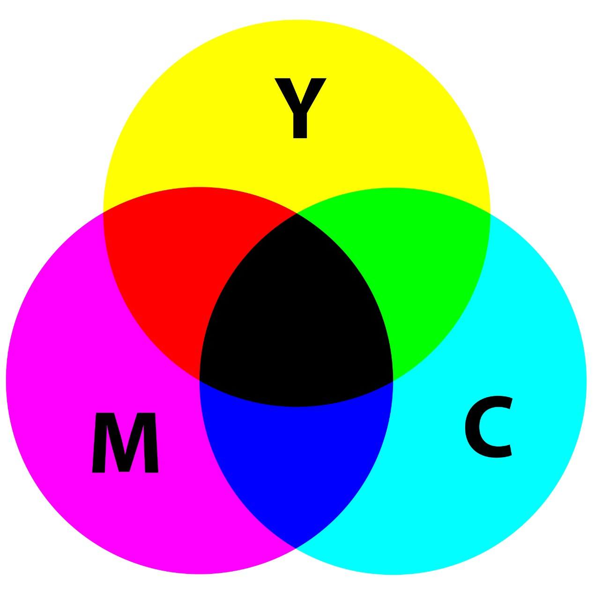
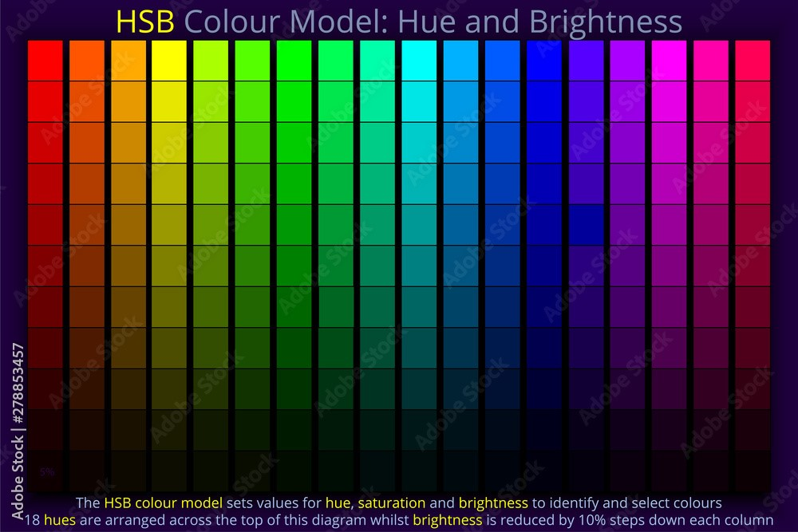
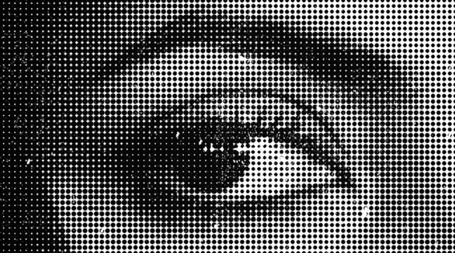
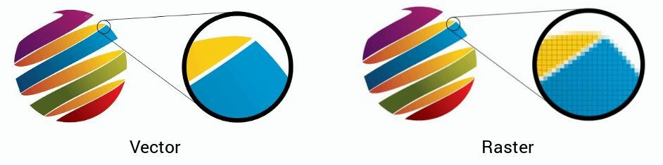
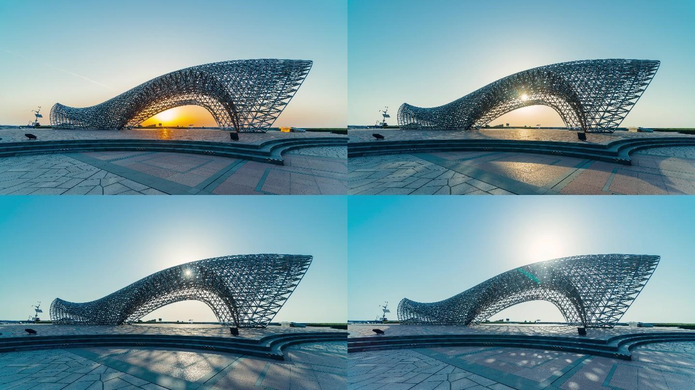

📸 الصور الرقمية وأنواعها
الصورة الرقمية هي ملف يأتي بأحجام وتنسيقات مختلفة، ويمكن فتحه على شاشات الأجهزة الرقمية مثل الحواسيب والأجهزة الذكية وغيرها من أنواع الشاشات. يمكن أن تكون هذه الصور بلون واحد أو أكثر، وتُعرض ثنائية البعد على أجهزة العرض.
تعتبر الصور الرقمية غير ملموسة لكن معظم تنسيقاتها يمكن طباعتها بواسطة أنواع مختلفة من الطابعات. كما يمكن تبادل الصور الرقمية ونقلها بين معظم الأجهزة الإلكترونية بسهولة.
🎨 نماذج الألوان في الصور الرقمية
1. RGB: الأساسيات للمشاريع الرقمية
RGB (أحمر، أخضر، أزرق) هو نظام ألوان يُستخدم لعرض الألوان على الشاشات. تقوم الشاشات والهواتف الذكية والتلفزيونات بمزج ثلاثة ألوان أساسية لإنشاء ظلال متعددة. يعتمد النظام على مبدأ المزج الإضافي للألوان: كلما زادت كثافة كل مكون، كان اللون الناتج أكثر سطوعًا.
2. CMYK: الاختيار الأمثل للطباعة
CMYK (سماوي، أرجواني، أصفر، أسود) هو نموذج ألوان يُستخدم في صناعة الطباعة. يعتمد على مبدأ المزج الطرحي للألوان: عند إضافة كل مكون، يتم تقليل الضوء المنعكس من السطح مما يخلق الظلال المطلوبة. هذا النظام مثالي لإنشاء المواد المطبوعة مثل الملصقات والكتيبات وبطاقات العمل.
3. HSB: درجة اللون، التشبع والسطوع
HSB (Hue، Saturation، Brightness) نموذج يستخدم لوصف الألوان من حيث الإدراك البشري. يتكون من ثلاثة مكونات: درجة اللون (Hue) لتحديد اللون الأساسي، التشبع (Saturation) لتحديد كثافة اللون، والسطوع (Brightness) لتحديد مستوى الإضاءة أو الظلام.
🖼️ أنواع الصور الرقمية
1. الصور النقطية (Raster Images)
تتكون من شبكة من البيكسلات (النقاط)، حيث يمثل كل بيكسل لونًا معينًا. تُستخدم هذه الصور في التصوير الفوتوغرافي وتحرير الصور مثل PNG, JPEG, BMP، ولكن عند تكبيرها كثيرًا قد تفقد دقتها.
2. الصور المتجهة (Vector Images)
تعتمد على معادلات رياضية لإنشاء الأشكال والخطوط والمنحنيات. هذه الصور قابلة للتكبير دون فقدان الجودة، وتُستخدم عادة في الشعارات والرسومات الفنية، مثل SVG وAI وEPS.
3. صور عالية الديناميكية (HDR - High Dynamic Range)
تحتوي هذه الصور على نطاق واسع من الألوان والإضاءة، وتهدف إلى التقاط التفاصيل الدقيقة في المناطق الفاتحة والداكنة بوضوح أكبر.
